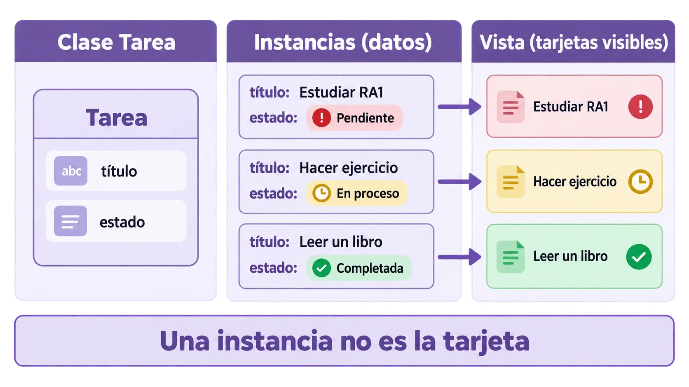

Contenido de la página
Ejemplo RA1-EJ09 · Práctica RA1-PB09 · RA1.e · Sesión orientativa: 50 min.
Qué aprenderá el alumnado
Al terminar, podrá reconocer clases, instancias y responsabilidades aprovechando los conocimientos previos de Java. El código se estudia como salida de herramientas de IA: el alumnado no tiene que memorizarlo ni escribirlo desde cero, pero sí localizar lo relevante, explicar el cambio y verificar su efecto.
Idea clave
Una clase define estructura y comportamiento; una instancia representa un objeto concreto. Un dato de tarea no es un control visual.

Secuencia de clase
- Activación (5 min): muestra la pantalla o comportamiento y pregunta dónde creen que se define.
- Explicación guiada: presenta la idea clave y separa herramienta, interfaz, datos y comportamiento.
- RA1-EJ09: recorre el ejemplo resuelto y señala las líneas relevantes.
- Cambio con IA: formula una petición pequeña, conserva el original y revisa diferencias.
- RA1-PB09: el alumnado trabaja desde una base independiente.
- Cierre: cada alumno explica una decisión y una comprobación.
RA1-EJ09 — Ejemplo resuelto
La clase Tarea representa datos. La vista decide cómo mostrarlos. Se compara la sintaxis con una clase Java sin requerir Android.
class Tarea {
constructor(titulo, prioridad) {
this.titulo = titulo;
this.prioridad = prioridad;
}
}
const tarea = new Tarea('Leer', 'Alta');Lectura guiada
- ¿Qué requisito resuelve cada fragmento?
- ¿Qué parte procede de la descripción visual y cuál añade comportamiento?
- ¿Qué cambiaría en pantalla al modificarlo?
- ¿Qué debe conservarse para no romper las conexiones existentes?
Prompt docente orientativo
Analiza este fragmento de una interfaz web generada con IA.
Señala únicamente las líneas relacionadas con: reconocer clases, instancias y responsabilidades aprovechando los conocimientos previos de Java.
Explica su efecto con lenguaje sencillo y propón un cambio mínimo.
No regeneres el proyecto completo y conserva identificadores y eventos.
Distingue lo que has razonado de lo que debe comprobarse en navegador.RA1-PB09 — Práctica básica
Enunciado para publicar
Punto de partida: proyecto web preparado por el profesor, ejecutable e independiente de prácticas anteriores.
Tarea: Identifica declaración, constructor, propiedades e instancia. Clasifica tres fragmentos por responsabilidad.
Entrega: Correspondencias clase–instancia–responsabilidad y explicación de su relación con la pantalla.
Comprobación mínima:
- El resultado se abre y funciona en navegador.
- El alumno localiza el fragmento relevante.
- El cambio está delimitado y existe una comparación antes/después cuando corresponda.
- La explicación usa evidencias propias; una respuesta copiada de la IA no basta.
- Se conserva el enfoque visual de Material Design 3 y el funcionamiento con teclado.
Solución orientativa
Mostrar guía de corrección
| Nivel | Evidencia observable |
|---|---|
| Satisfactorio | Cumple la tarea, localiza el fragmento, explica la relación y aporta una prueba coherente. |
| En revisión | El resultado funciona, pero falta justificar la elección o demostrar el proceso. |
| Insuficiente | Solo aporta una captura o texto de IA, no localiza el código o el comportamiento no corresponde al requisito. |
Comprobación y cierre
- ¿Qué elemento o fragmento fue decisivo?
- ¿Qué pidió exactamente a la IA?
- ¿Qué diferencia revisó?
- ¿Cómo sabe que no se rompió otra parte?